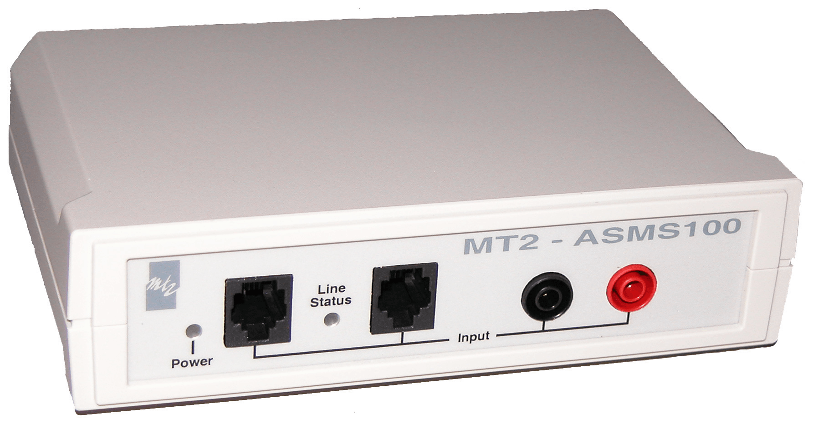

eOLT-XGPON
This licence allows to use the PON platform as a continous real-time Non Intrusive Viewer Analyzer for XG-PON1 signals. It is the first and only XG-PON1 Analyzer on the market!
It is the heir of MT2's original eOLT GPON emulator, which is used by LAN for the official BBF.247 certification for its neutrality, its flexibility and its comprehensiveness (one may configure the XGPON bitstream from GTC up to OMCI).
Spécifications
Standards :
G.897.1 - General requirement
G 987.2 - GPON PMD
G 987.3 - GPON GTC
G.988 - OMCI
PCAP format
Download datasheet
Contact : mt2@mt2.fr
NIVA-XGPON
This licence allows to use the PON platform as a continous real-time Non Intrusive Viewer Analyzer for XG-PON1 signals. It is the first and only XG-PON1 Analyzer on the market!
The deep and detailed OMCI, PLOAM and GTC level analysis makes the MT2 NIVA XG-PON a complete tool for protocol fine-tuning, performance analysis, standard compliance and interoperability tests.
Spécifications
Standards :
G.897.1 - General requirement
G 987.2 - GPON PMD
G 987.3 - GPON GTC
G.988 - OMCI
PCAP format
Download datasheet
Contact : mt2@mt2.fr
EOLT-GPON
The first and only OLT emulator - specially designed to meet BBF.247 specification program !
The MT2 eOLT-GPON is based on the same hardware than the worldwide appreciated NIVA-GPON. It has been originaly designed for the BBF.247 ONU certification program. It is used in conjonction with the NIVA-GPON and a traffic generator by the official testing laboratories (see the BBF website and the BBF.247 certification program).
Spécifications
The MT2 OLT emulator (eOLT-GPON) is independent of any chipset or commercial OMCI stack thus offering a total neutrality.
Download datasheet
Contact : mt2@mt2.fr
NIVA-GPON
Real-Time, High performance FTTH/GPON analyzer. Available in two references : NIVA-GPON-STARTER and NIVA-GPON-PREMIUM (see data-sheet).
NIVA-GPON is a high performance analyzer for a non-intrusive analysis of FTTH/GPON signals, free of any GPON chipset. Its separate passive probe allows the tapping on the fiber as well on OLT side than ONT/ONU side. It is fitted with a new high performance and automatic burst data recovery (patent pending).
G 984.3 - GPON MAC
G 984.4 - GPON OMCI
ATM/AAL5 - PPPoE/LLC/Ethernet -
PCAP format
Download datasheet
Contact : mt2@mt2.fr
NIVA-ADSL
High impedance, Real-Time, First class ADSL/2/2+ decoding.
NIVA-ADSL is a high performance analyzer for a non-intrusive analysis of ADSL / ADSL2 / ADSL2+ signals. Its high impedance probe allows the tapping on the line without any disconnection. You will choose it for interoperability tests, deep analysis of the handshake phase or specific command signals between DSLAM and modem or QoS analysis thanks to the ultra precise time-stamping synchronized with NTP server or any data exchanged by the modem-DSLAM couple.
G 984.3 - GPON MAC
G 984.4 - GPON OMCI
ATM/AAL5 - PPPoE/LLC/Ethernet -
PCAP format
Download datasheet
Contact : mt2@mt2.fr

ASMS100
High impedance, monitoring and analysis system for POTS signals.
ASMS100 offer galvanic insulation, so you can work safely and without any effect on the signal (high impedance). You can bring it with you in the field. It is easy to use and all the results of your work can be stored inside your PC as and when required. ASMS100 will be your fellow traveller each time you need to analyze telephony signals and when it is important to have a complete view, from the physical layer up to protocol layers.
DC to 20 KHz.
Spectrum analysis of any signal portion.
Time and level measurement
DTMF analysis
CallerID decoding
Download datasheet
Contact : mt2@mt2.fr